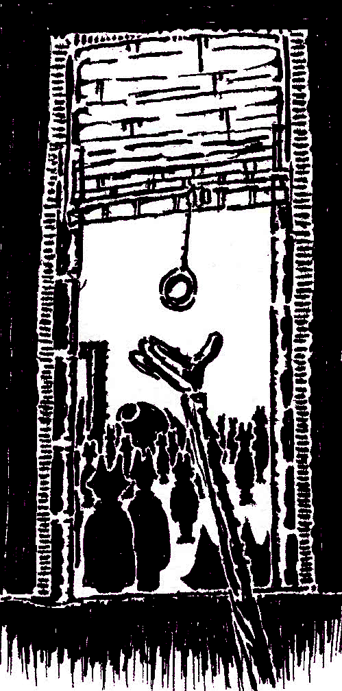

[Opt-Out]
An Open-World Turn-Based RPG of creatures and action.

WHAT IF YOU WERE CONTACTED BY A FUTURE?
this isn't a future that will be...
this isn't a future meant for you...
this isn't a future because of you...
this is a future that is...
A STORY OF SUPERSTITION AND PRESSURE.
Will you Seek out the truth or Avoid the unknown?
...
Details:
Genre: Single-Player JRPG
Developer: MustardPlus
Publisher: MustardPlus
Platforms: Windows
Release Date: TBA
Made with GameMaker Studio 2.
Development roughly started: January 22, 2016
...
- ~ Return Home ~